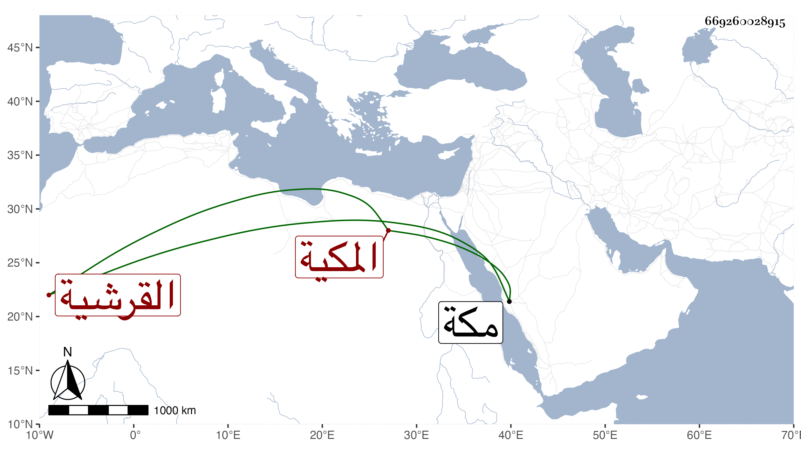

0902Sakhawi.DawLamic.ITO20230111-ara1.EIS1600.669260028915
Biography ID: 669260028915
260
زينب ابنة علي بن أبي البركات محمد بن أبي السعود محمد بن حسين بن علي بن أحمد بن عطية بن ظهيرة القرشية المكية شقيقة إبراهيم وأخوته . ولدت سنة اثنتين وثلاثين وثمانمائة بمكة وأجاز لها خلق في استدعاء ابن فهد كالقبابي والتدمري والزركشي والواسطي والبرهان الحلبي وابن ناصر الدين وابنة ابن الشرائحي وابن بردس وابن الطحان وابن ناظر الصاحبة . وتزوجها ابن عمها الجمال محمد بن نجم الدين سنة خمسين فأولدها . تأخر من ذكورهم إلى وقت تاريخه الزيني عبد الباسط الماضي وتوجهت مع زوجها وولدها غير مرة للزيارة النبوية ، وهي رئيسة متقية متقنة صابرة متوددة مدبرة أقر الله عينها بولدها وبنيه وابن أخيها وبنيه .
